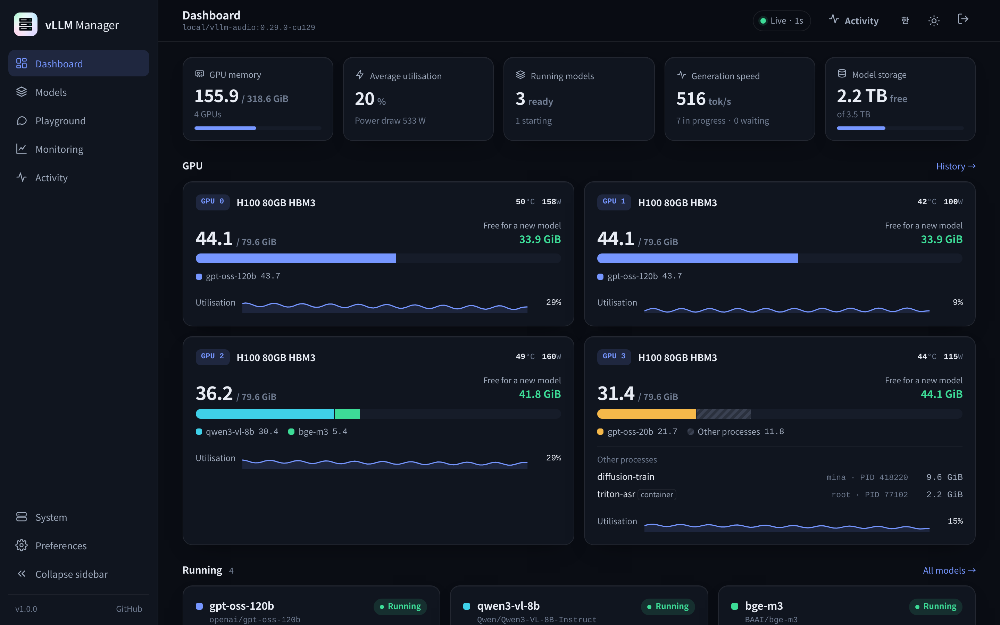
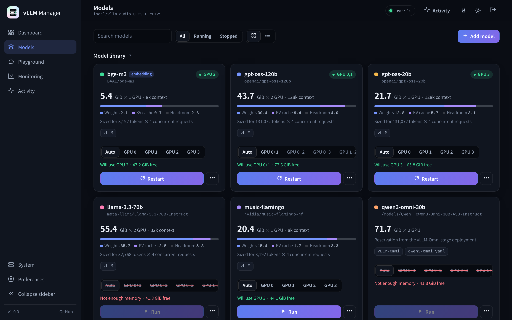
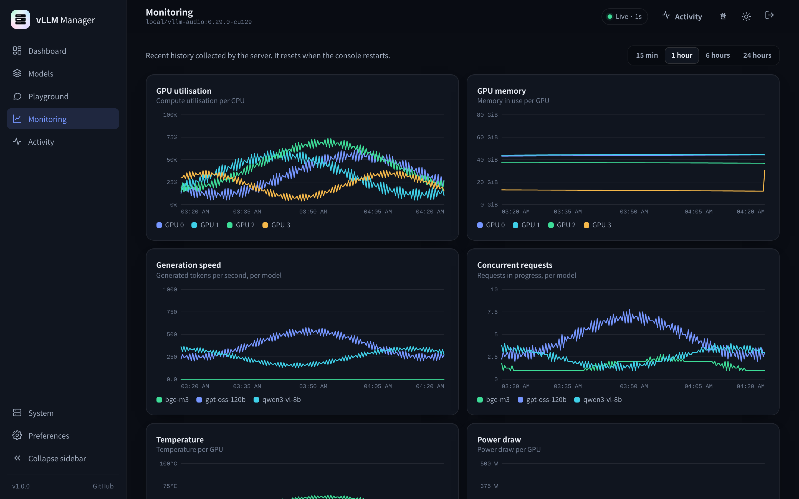
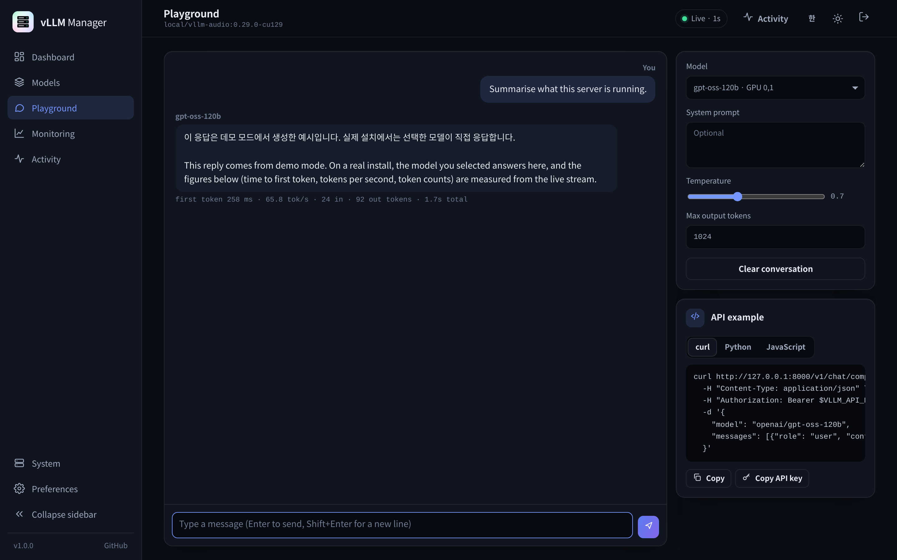
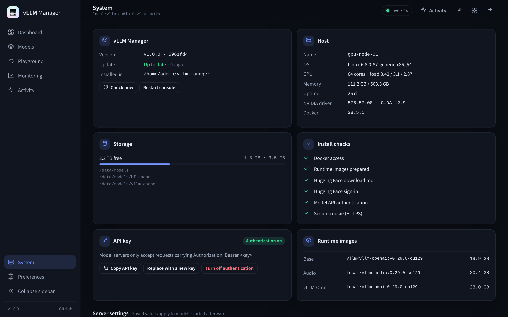
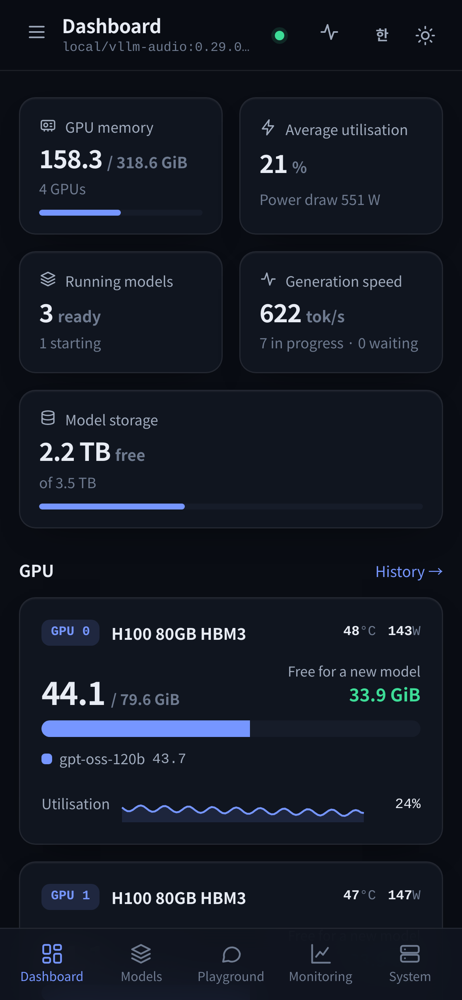
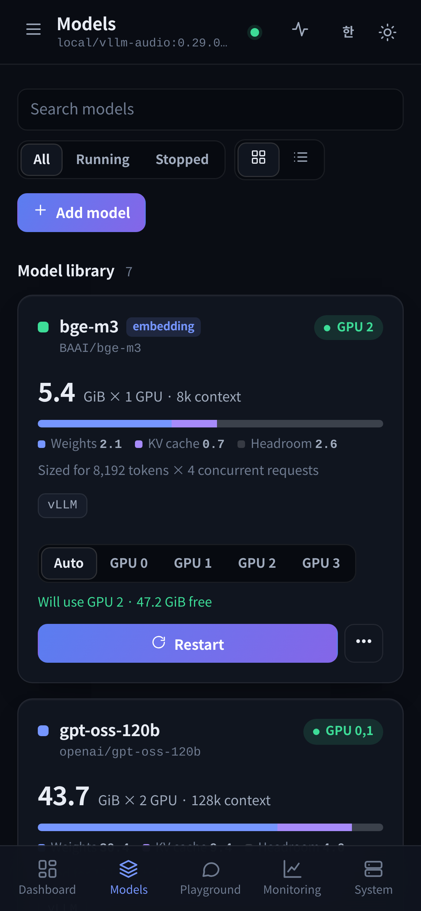
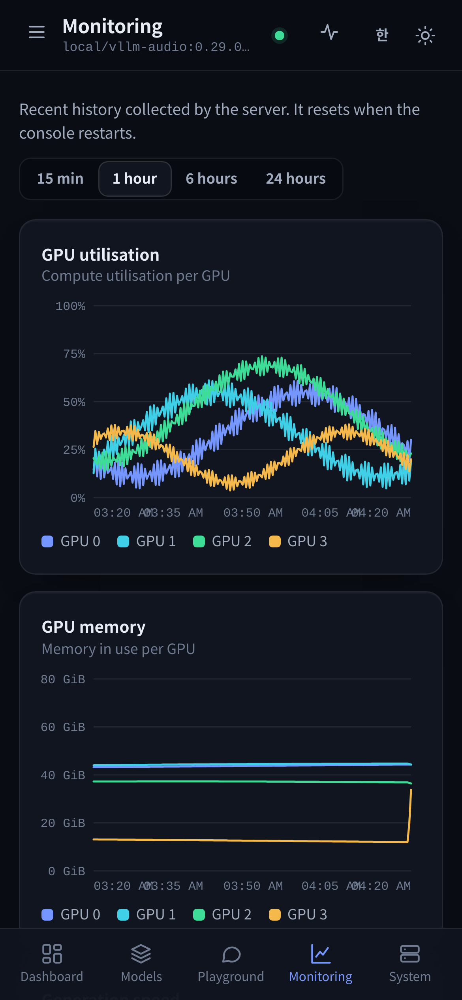
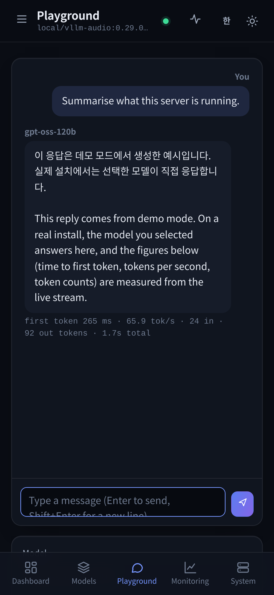

Run your GPU server's models from a browser
vLLM Manager is a web console and CLI for serving models with vLLM on your own NVIDIA hardware. Download a model, see whether it fits before it starts, watch what each GPU is holding, and test the answer, without writing a Docker command.
curl -fsSL https://raw.githubusercontent.com/yojun313/vllm-manager/main/install.sh | shLinux · NVIDIA GPU · Docker with the NVIDIA Container Toolkit. The installer never uses sudo.

Everything between "I have GPUs" and "the API answers"
Each model runs in its own container on its own port. The console plans the memory, starts and stops the containers, and shows you what is going on.
Download with a fit check
Search Hugging Face from the console. Before a byte is downloaded you see whether the model fits on one GPU, needs several, or cannot run on this server at all.
Memory planned per model
Weights, KV cache and headroom are estimated from the model's architecture, so several models can share a GPU. A start is refused when the reservation would not fit.
Live GPU and model metrics
Memory per model and per outside process, utilisation, temperature and power. Tokens per second, queue depth and time to first token for every running model, with 24 hours of history.
Playground
Send a message to any running model and read the streamed answer with its speed. Copy a ready curl, Python or JavaScript snippet for the same endpoint.
Start-up you can follow
Weight loading, compilation and CUDA graph capture appear as one progress bar with the live log beside it. Jobs keep running if the console restarts.
No config files to edit
The installer asks a few questions with detected defaults. After that, storage paths, GPUs, ports, images, the API key and the admin password are all changed in the console.
A library that knows your hardware
Every model shows the memory it needs per GPU and how that splits into weights, KV cache and headroom.
- Pick GPUs yourself or let the console choose the emptiest
- Combinations that would not fit are struck out before you click
- Edit the model's vLLM config in place; the previous version is kept
- vLLM and vLLM-Omni models side by side

See where the time and memory go
The server keeps a rolling history, so the charts are already filled in when you open the page.
- Utilisation, memory, temperature and power per GPU
- Generation speed and concurrent requests per model
- Which process owns GPU memory, including ones this tool did not start

Check the answer before you hand out the URL
The playground talks to the model through the console, so the API key never reaches the browser.
- Streaming output with reasoning shown separately
- Time to first token, tokens per second and token counts
- Connection snippets with your public address filled in

Settings live in the console
The System page checks the install and holds every server setting.
- Storage folders, GPUs to use, ports and runtime images
- Create, rotate or turn off the model API key
- Install checks that say what is missing and how to fix it
- Update notice and one-click console restart

The same console on a phone
One responsive web app with a tab bar on small screens. Light and dark themes, English and Korean.




Install
You need a Linux host with an NVIDIA driver, Docker, and the NVIDIA Container Toolkit. The installer checks all three and tells you the exact command for anything missing.
Run the installer
It installs uv into your home folder, downloads vLLM Manager into ~/vllm-manager and sets up the console's Python environment.
Answer a few questions
Model folder, GPUs, console port and an admin login. Every question has a detected default; press Enter to accept it.
Open the console
The address is printed at the end. The runtime image is downloaded in the background while you look around.
Add a model
Models → Add model, type a Hugging Face name, check the fit, download, then press Run.
# install and start curl -fsSL https://raw.githubusercontent.com/yojun313/vllm-manager/main/install.sh | sh # afterwards ~/vllm-manager/vllm server status # is the console running, and where ~/vllm-manager/vllm server enable # start it at boot (systemd user service) ~/vllm-manager/vllm doctor # check the install ~/vllm-manager/vllm update # get the latest version ~/vllm-manager/vllm configure # run the setup questions again
The CLI does everything the console does
| Command | What it does |
|---|---|
./vllm pull Qwen/Qwen3-8B | Check the fit, download the model and write its config |
./vllm up qwen3-8b -g 0 | Start it on GPU 0 (leave -g out to pick the emptiest GPU) |
./vllm ps | Running servers and the memory left on each GPU |
./vllm logs qwen3-8b | Follow a server's log |
./vllm down qwen3-8b | Stop it |
./vllm key new | Turn on API key authentication for the model servers |
Questions
Does it replace vLLM?
No. It runs the official vLLM image (and a vLLM-Omni image for speech-capable models) in Docker and manages those containers. Clients talk to vLLM's own OpenAI-compatible API directly.
Which models can it serve?
Whatever the vLLM version in your image supports: text, vision, audio input and embedding models, plus Qwen3-Omni through vLLM-Omni. The image tag is a setting, so you choose the version.
Is it safe to expose?
The console requires a login (PBKDF2-hashed password, signed session cookie, rate-limited sign-in, cross-origin requests refused, no API docs endpoint). It controls Docker on the host, so put it behind HTTPS and turn on the secure cookie before opening it to the internet. Model ports are protected separately by the API key.
Other people use the same GPUs. Does it cope?
Yes. Memory used by processes it did not start is measured and subtracted before a model is placed, and those processes are listed by name, user and PID.
How do I remove it?
Stop the models (./vllm down) and the console (./vllm server down), then delete ~/vllm-manager. Model weights stay in the folder you chose until you delete them.